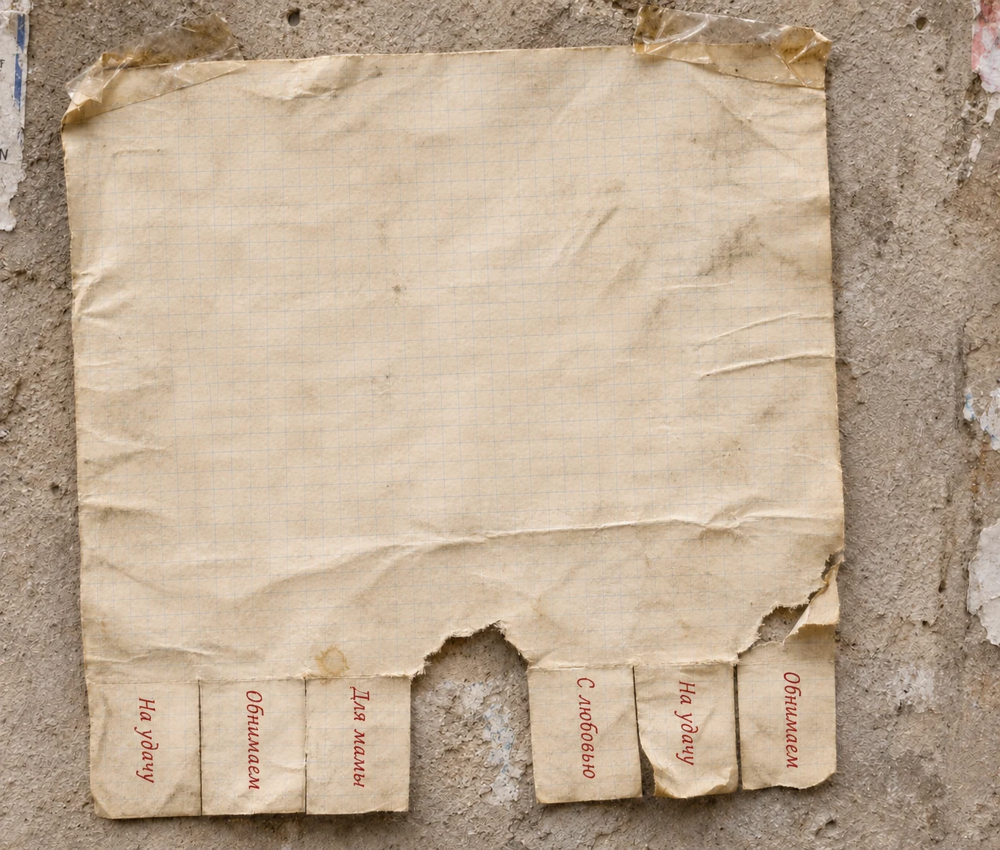

Мам, с Днём
матери!
Спасибо, что ты рядом. С тобой можно и посмеяться от души, и поговорить о важном. Пусть у тебя будет побольше дней, когда можно выдохнуть, заняться любимым делом и порадоваться чему-нибудь простому.
Крепко обнимаем!